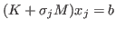
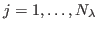
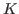
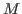
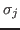

Diffusive Optical Tomography (DOT) is an emerging technology for breast tumor detection and brain imaging in which the region of interest is illuminated with near infrared light at a specific wavelength and the data are comprised of observations of the resulting scattered diffuse fields at a number of locations surrounding the medium. Given these data as well as the partial differential equation governing the interaction of light and tissue, we seek to recover space and time-varying maps (i.e. images) of concentrations of physiologically relevant chromophores such as oxygenated and deoxygenated hemoglobin, lipid, and water as well as properties governing the scattering of light within the medium. Due to the diffusive physics associated with this problem as well as limitations concerning the geometric distribution of sources and detectors, the image recovery problem is an ill-posed, non-linear inverse problem. New technology allows for the collection of hyperspectral data. Although we anticipate that the availability of more information using multiple wavelengths increases the accuracy of the reconstruction, the use of hyperspectral data poses a significant computational burden in the context of image recovery.
We seek to reconstruct large scale structure of the breast (adipose and fibroglandular tissue) as well as the characterization of tumors. The Born approximation is employed to linearize the parameter-to-observation map that results in a system of partial differential equations for the incident and the scattered fields. This allows us to consider complex geometries for which the Green's function is not easily determined. Furthermore, under this approximation, the forward problem that models the propagation of light through a turbid medium (such as the breast) can be represented by a shifted linear systems of equations of the form

for
. Here,
and
correspond to the discrete finite element representations of the diffusion operator and the absorption operator respectively,
are the shifts corresponding to various wavelengths. By exploiting the shift-invariant property of Krylov subspace methods and using a shift-and-invert preconditioner, we show how to solve this shifted system of equations at a cost that is nearly independent of the number of wavelengths. Further, we discuss various strategies to reduce the computational burden of solving systems involving multiple shifts and multiple right-hand sides.The reconstruction of the chromophore concentration from the hyperspectral DOT data is performed using both traditional Tikhonov-based regularization and a parametric level-set approach. In the parametric level set approach, the Jacobian needs to be re-computed at every iteration, and we show how this procedure can be accelerated significantly by carefully accounting for the redundancy in information content across multiple wavelengths. Numerical experiments based on synthetic data-sets will demonstrate the scalability of our algorithm.